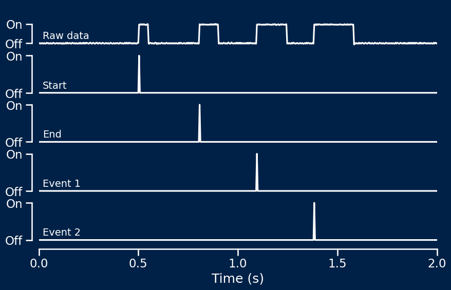
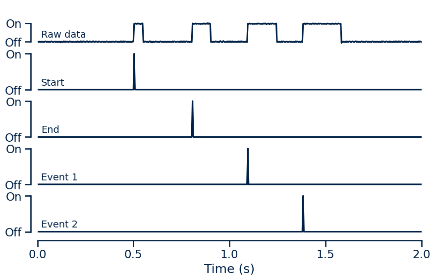

# Import library
import syncmaster
# Create device object
device = syncmaster.SyncMaster()
# Run trial with start and end signals
device.start() # Send start signal
''' Run behavioural task '''
device.end() # Send end signal
# Close communication channel when finished
device.close()SyncMaster
Synchronise behavioural tasks with recorded signals
The SyncMaster provides a simple way to synchronise behavioural tasks with recorded signals.
The device is connected to the computer running the task via USB and the output port is connected to an input on the recording system. The task script can then send commands to the device, producing event-specific signals on the output channel which can be used to time-lock recorded signals to behavioural events.
Installation
The drivers to run the device using Python can be installed using pip:
pip install syncmasterFurther details are given in the installation section.
Once the Python package is installed and the device connected as outlined in the setup section, the device can be initialised and triggered to synchronise behavioural events with recorded signals. A simple application is shown below, with further details available in the initialisation and triggering sections.
Example application
After importing the library, the device must be initialised. This should be done once at the beginning of the behavioural task.
Triggers can then be sent using simple commands. These can be integrated with the behavioural task in order to indicate the occurence of events of interest. This generates signals on the output channel which are recorded and can be used to analyse recorded data relative to behavioural events.
On completion of the task, the communication channel with the device should be formally closed.
Note that more complex task designs with up to 100 user-defined event types can be accommodated. This is outlined in detail in the triggering section.
Output
The device produced pulses of differing lengths on a single output channel. Each pulse length corresponds to a specific event type.
The package includes a function for recovering the discrete event timings from this single-channel pulse data in order to facilitate data analysis. A simple example is shown below with raw recorded data above and each subsequent row showing recovered trigger timings for each event type. This is described in further detail in the analysis section.


This approach can also be used to recover precise event timings for user-defined events. This is outlined in detail in the analysis section.